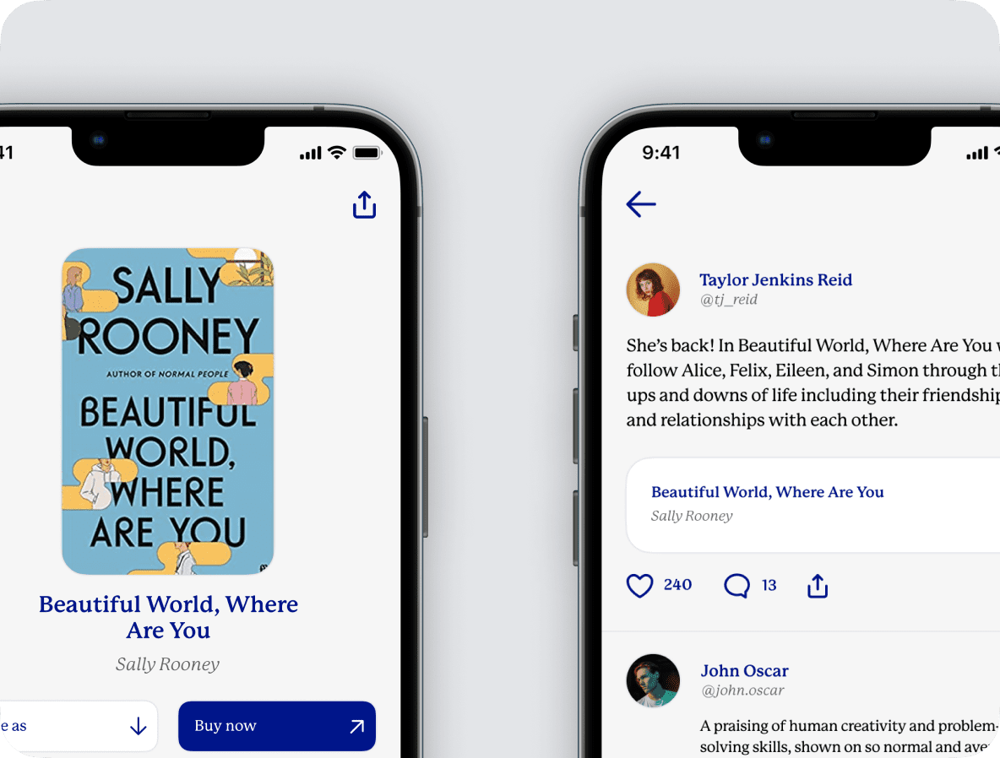
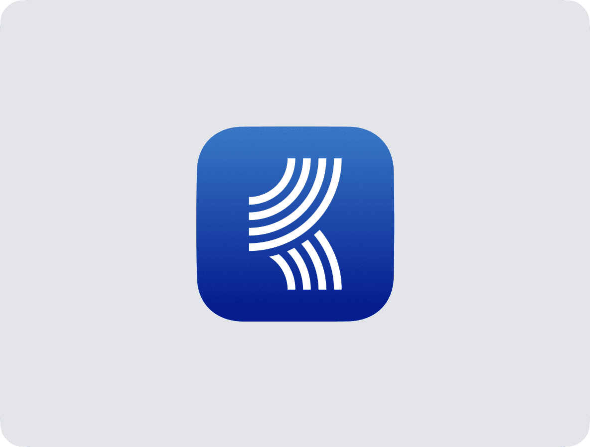
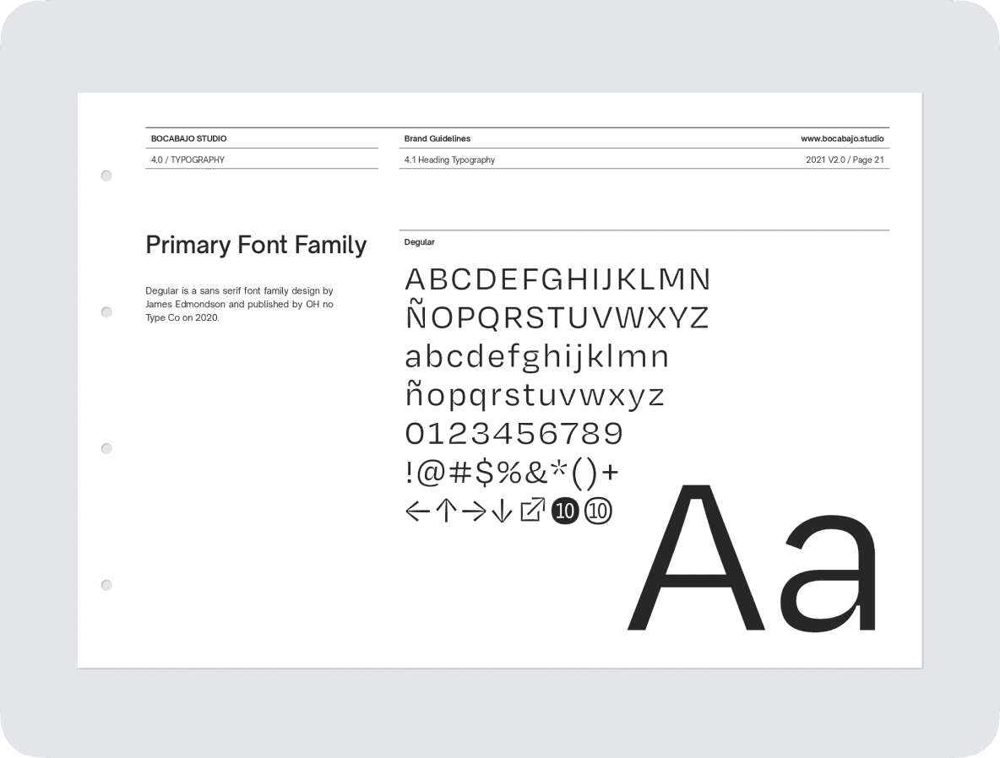
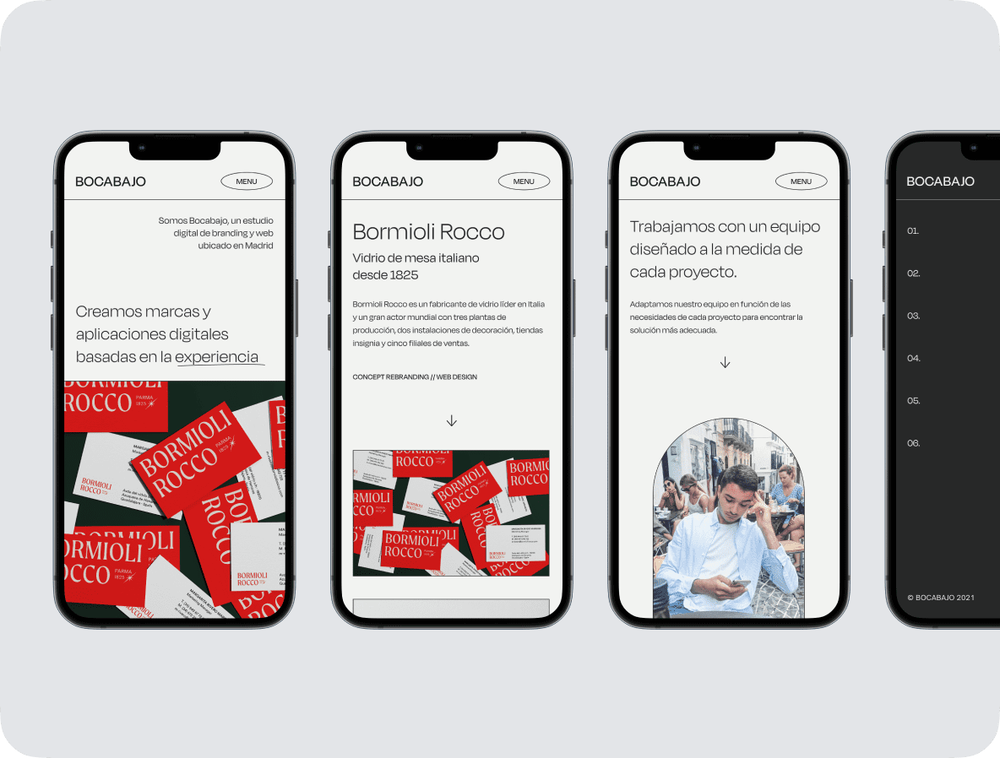
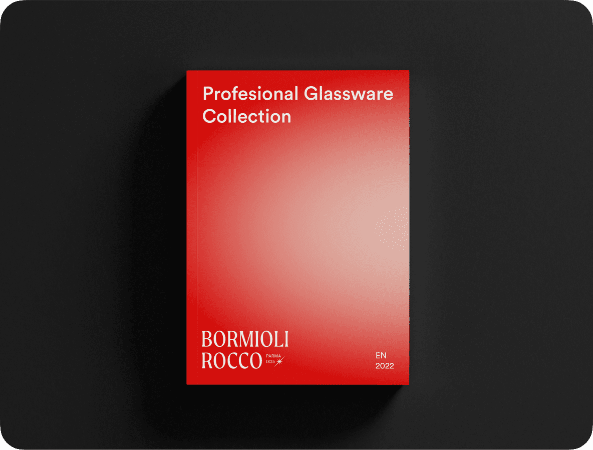
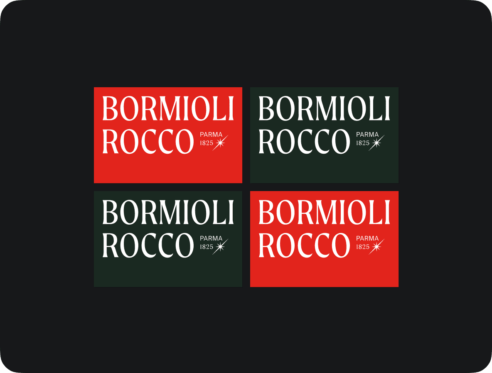

Hey, I’m Alberto de Lucas.
A product designer with a focus on visual design, who is based in
Madrid.
For the past 7 years I’ve worked in print, product, branding and marketing campaigns for known companies such as Iberdrola, Mastercard or the Spanish Ministry of Foreign Affairs.
© 2022
Based in
Madrid, Spain
Work
Selection
BLATO - A new social network for book lovers
Nowadays, almost all the time that we spend on the internet is spent on social media, which takes away time for other cultural activities.
2022


BOCABAJO STUDIO - A digital studio based in Madrid
This project started with the idea of building a professional studio brand for the design projects I was making as a freelancer. The name "Bocabajo" is a spanish word that means upside down, which relates to the idea of rotating a project to view it from another perspective.
2021


BORMIOLI ROCCO - Italian leading glass manufacturer creating stories since 1825
The objective of the project was to make a full rebrand of the italian company Bormioli Rocco. Even though it is a leading glass manufacturer, their current brand feels outdated and their logo is not responsive.
2021

